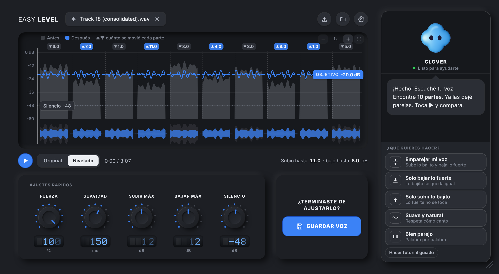
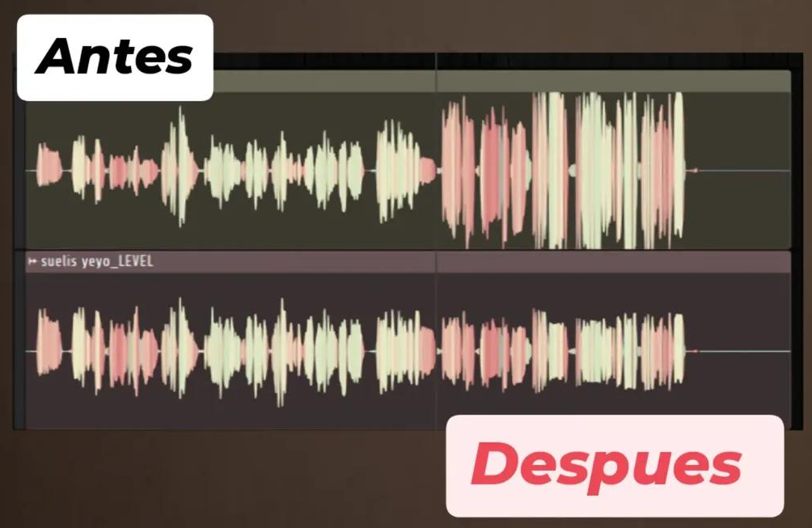

Empareja el volumen de cada frase por ti.

Sin compresión y con naturalidad.

Pones tu vozArrástrala dentro del plugin
Mejora volumen y pegadaEliges tu nivel y listo
La arrastras a tu DAWYa sale nivelada, lista para mezclar